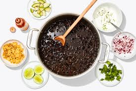

Black Bean Soup

4 Ingredient Black Bean Soup
This black bean soup is very easy to make.
Ingredients
- 1 cup salsa
- 1 pinch allspice
- Two 15-to19-ounce cans black beans, drained and rinsed
- 3 cups low-sodium chicken broth
Steps
- In a large nonstick saucepan, combine the salsa and allspice. Cook over medium heat for 3 minutes. Stir in the black beans and chicken broth; raise the heat to medium-high and bring to a boil. Reduce the heat and simmer 10 minutes. Use an immersion blender or potato masher to coarsely mash the beans in the pot.
- Make it a Drop 5 Meal by adding: A dollop of reduced-fat sour cream on top, and serve with 2 cups mixed greens tossed with 10 pumps spray dressing, 1 ounce baked tortilla chips (around 17 chips) and a pear. 513 complete meal calories.
Back to Homepage